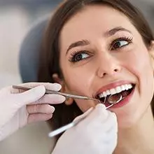
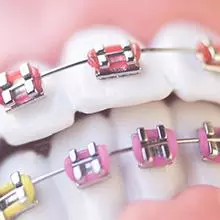
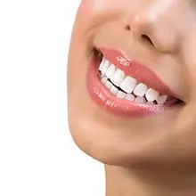
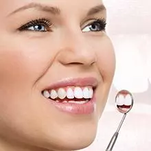

Caries
La caries dental es uno de los problemas más frecuentes en la salud bucal. Se produce por bacterias y el consumo de azúcares. Con un tratamiento adecuado, realizamos una limpieza que mejora tu sonrisa y previene complicaciones futuras.
Endodoncia
La endodoncia es un procedimiento que permite salvar dientes dañados o infectados, eliminando el tejido afectado del interior del diente y sellándolo para evitar infecciones. Es fundamental para conservar piezas dentales y aliviar el dolor.

Ortodoncia
La ortodoncia corrige la posición de los dientes y la mordida, utilizando aparatos como brackets o alineadores. Este tratamiento mejora la estética dental y la funcionalidad, facilitando la higiene y previniendo problemas futuros.
Periodoncia
La periodoncia se encarga de la prevención, diagnóstico y tratamiento de enfermedades de las encías y el hueso que sostiene los dientes. Un tratamiento oportuno ayuda a mantener la salud bucal y evitar la pérdida dental.
Odontopediatría
La odontopediatría está enfocada en la salud bucal de los niños, desde la infancia hasta la adolescencia. Ofrecemos atención especializada para prevenir y tratar problemas dentales en los más pequeños, promoviendo hábitos saludables.

Implantes Dentales
Los implantes dentales son una solución segura y duradera para reemplazar dientes perdidos. Consisten en una raíz artificial que se integra al hueso maxilar, devolviendo la funcionalidad y la estética a tu sonrisa.

Blanqueamiento Dental
El blanqueamiento dental es un tratamiento estético que aclara el color de los dientes, eliminando manchas y devolviendo una sonrisa más brillante. Utilizamos técnicas seguras y efectivas para lograr resultados visibles.
Cirugía Oral
La cirugía oral abarca procedimientos como la extracción de muelas del juicio, eliminación de quistes o tratamiento de lesiones bucales. Nuestro equipo garantiza intervenciones seguras y una recuperación adecuada.

Diseño de sonrisa
El diseño de sonrisa es un tratamiento personalizado que combina diferentes técnicas odontológicas para mejorar la estética dental, logrando una sonrisa armónica y atractiva según las características faciales de cada paciente.